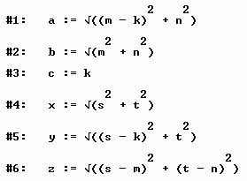
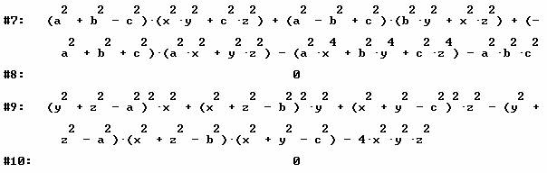

Problema 327
Dado un triángulo ABC, sea
un punto P en su plano y sean x=AP, y=BP, z=CP.
Demostrar que:

Solución de Nicolás Rosillo Fernández, IES
Máximo Laguna (Santa Cruz de Mudela, Ciudad Real), 1 de Julio 2006
Sean A(0,0), B(k,0), C(m,n) y P(s,t)
Definimos en Derive5 a, b, c,
x, y, z.

Introducimos las expresiones a estudio y simplificamos

Nicolás Rosillo Fernández
1 de Julio 2006